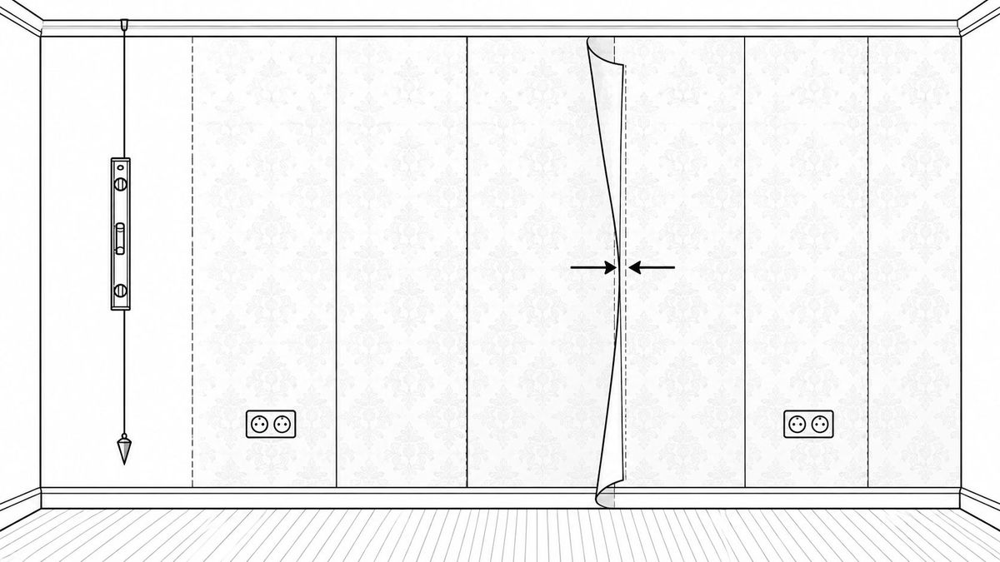

поклейка обоев в 2026 году стоит 350–700 руб./м² за простые полотна, 500–900 руб./м² за виниловые и 700–1 200 руб./м² за флизелин с подгонкой рисунка. Подготовка стены — 250–450 руб./м², снятие старых обоев — 150–300 руб./м². Квартира 60 м² (около 150 м² стен) обходится в 120 000–260 000 руб. с материалами. Скрытые расходы — грунт, шпаклёвка и подгонка раппорта — добавляют 15–25 % к смете, если их не посчитали заранее.
Расценки на работы

| Работа | Цена за м² | Комментарий |
|---|---|---|
| Снятие старых обоев | 150–300 руб. | моющиеся — дороже на 30 % |
| Демонтаж плитки или краски | 300–600 руб. | с шлифовкой |
| Шпаклёвка под обои | 250–450 руб. | 1–2 слоя |
| Грунтование | 60–120 руб. | 1–2 слоя |
| Оклейка простыми обоями | 350–500 руб. | без подгонки |
| Оклейка виниловыми | 500–700 руб. | плотные полотна |
| Оклейка флизелиновыми | 600–900 руб. | клей на стену |
| Подгонка рисунка | +100–300 руб. | раппорт от 32 см |
| Поклейка на потолок | +150–250 руб. | с лесов |
Самый частый перерасход — подгонка раппорта: обои с рисунком 64 см дают отход до 1,5 м с рулона, и это одновременно +10–15 % к материалу и +100–300 руб./м² к работе.
Материалы: сколько уйдёт
| Материал | Расход | Цена |
|---|---|---|
| Обои простые | 1,1 рулона на 5 м² стены | 800–2 500 руб./рулон |
| Обои виниловые | 1,1 рулона на 5 м² | 1 500–4 500 руб./рулон |
| Обои флизелиновые | 1,1 рулона на 5 м² | 2 000–6 000 руб./рулон |
| Клей | 1 упаковка на 25–30 м² | 600–1 500 руб. |
| Грунт | 0,2–0,3 л/м² | 250–600 руб. за 5 л |
| Шпаклёвка | 1,2–1,8 кг/м² | 500–1 200 руб. за 20 кг |
Рулон 1,06×10,05 м закрывает 5–5,3 м² стены с учётом подрезки. На комнату 16 м² (42 м² стен) уходит 8–9 рулонов без раппорта и 9–11 с раппортом.
Смета квартиры 60 м²
| Позиция | Объём | Стоимость |
|---|---|---|
| Снятие старых обоев | 150 м² | 22 500–45 000 руб. |
| Шпаклёвка и грунт | 150 м² | 46 500–85 500 руб. |
| Оклейка виниловыми | 150 м² | 75 000–105 000 руб. |
| Обои | 33–36 рулонов | 50 000–160 000 руб. |
| Клей, грунт, шпаклёвка | — | 15 000–30 000 руб. |
Итого 209 000–425 500 руб. под ключ. Без снятия старых обоев и шпаклёвки (гладкие стены) — 140 000–295 000 руб.
Скрытые расходы
| Статья | Сколько добавит | Когда возникает |
|---|---|---|
| Подгонка раппорта | +10–15 % материала | рисунок от 32 см |
| Выравнивание стен | +250–450 руб./м² | перепад больше 5 мм |
| Обход труб и радиаторов | +300–800 руб./шт. | старые чугунные стояки |
| Поклейка на потолок | +150–250 руб./м² | по желанию |
| Вывоз мусора | 3 000–8 000 руб. | старые обои и упаковка |
В смете подрядчика эти статьи часто не указаны. Просите расписать их отдельно: разница между «100 000 руб.» и итогом может достигать 40 %.
Что влияет на цену
| Фактор | Влияние на смету |
|---|---|
| Высота потолков от 2,8 м | +10–15 % (леса, подрезка) |
| Крупный рисунок с раппортом от 64 см | +10–15 % материала |
| Много углов, ниш, труб | +15–25 % работы |
| Работа в жилой квартире с мебелью | +10 % |
| Срочность (2–3 дня на квартиру) | +20 % |
| Обои под покраску | +150–300 руб./м² (покраска отдельно) |
Самый дорогой фактор — не оклейка, а подготовка. Разница между «гладкие стены» и «стены после снятия плитки» — 300–600 руб./м², то есть на квартиру 45 000–90 000 руб.
Как сэкономить без пузырей
- Не снимать старые обои, если они держатся: экономия 150–300 руб./м².
- Выбрать обои без раппорта: экономия 10–15 % материала.
- Шпаклевать только проблемные участки, а не всю стену.
- Клеить в комнатах самостоятельно, а потолки и сложные углы отдать мастеру.
- Покупать обои одной партией со скидкой 5–10 % при объёме от 30 рулонов.
Экономить на грунте нельзя: без него клей не держит, и стыки расходятся через 3–6 месяцев. Грунт на квартиру стоит 3 000–6 000 руб., переклейка — 75 000–105 000 руб.
Как принять работу
- Осмотреть стыки при боковом свете: не должно быть расхождений и нахлёстов.
- Проверить пузыри ладонью: они недопустимы, мелкие исчезают после высыхания за 2–3 дня.
- Проверить подрезку у плинтуса, потолка, розеток: зазор не больше 1–2 мм.
- Убедиться, что рисунок совпадает на стыках по всей высоте.
- Проверить углы: полотно не должно отходить и топорщиться.
Приёмку делают через 2–3 дня после оклейки, когда клей высохнет: свежие обои ещё «садятся» и мелкие дефекты могут уйти или, наоборот, проявиться.
Сроки и сезонность
Оклейка одной комнаты 16 м² занимает 1–2 дня с подготовкой, квартиры 60 м² — 5–8 рабочих дней. Пик спроса — сентябрь–ноябрь и март–апрель: в эти месяцы мастера загружены и цена выше на 10–15 %. Зимой и в июле смету можно снизить на 5–10 %, но сохнуть обои будут дольше: при +18 °C и влажности 60 % клей схватывается за 48 часов вместо 24.
Порядок работ
- Освободить комнату, снять розетки и выключатели, защитить пол.
- Снять старые обои, простучать и заделать трещины.
- Зашпаклевать в 1–2 слоя, отшлифовать, обеспылить.
- Прогрунтовать, высушить 4–6 часов.
- Разметить вертикаль отвесом, наклеить первое полотно.
- Клеить полотна встык, подгоняя рисунок по раппорту.
- Обрезать излишки, вернуть розетки, установить плинтус.
Ошибки и их цена
| Ошибка | Последствие | Исправление |
|---|---|---|
| Не посчитан раппорт | не хватило 1–2 рулонов | докупка другой партии — тон в тон не совпадёт |
| Оклейка по неровной стене | пузыри и отходы по швам | переклейка 75 000–105 000 руб. |
| Нет грунта | клей не держит, стыки расходятся | переклейка |
| Клей на полотно вместо стены | размокание флизелина | замена полотна |
Чек-лист перед заказом
- В смете отдельно: снятие, шпаклёвка, грунт, оклейка, подгонка.
- Раппорт учтён, запас 10–15 %.
- Обои одной партии на всю квартиру.
- Стены проверены правилом 2 м: перепад до 3 мм.
- Вывоз мусора включён в смету.
Частые вопросы
Сколько стоит поклеить обои в квартире 60 м²?
209 000–425 500 руб. под ключ со снятием старых обоев, шпаклёвкой и материалами. Без подготовки — 140 000–295 000 руб.
Сколько стоит поклейка обоев за м²?
350–700 руб./м² за простые, 500–900 руб./м² за виниловые, 700–1 200 руб./м² за флизелин с подгонкой рисунка.
Сколько рулонов нужно на комнату 16 м²?
8–9 рулонов 1,06×10,05 м без раппорта, 9–11 с раппортом 64 см.
Нужно ли снимать старые обои?
Если они держатся крепко и лежат ровно — можно клеить поверх после грунта. При пузырях и отслоениях снимать обязательно.
Что дороже — обои или покраска?
Покраска дешевле на 20–30 % при готовых стенах: 250–450 руб./м² работы. Но обои скрывают мелкие дефекты.
Сколько времени занимает поклейка квартиры?
5–8 рабочих дней на 60 м² с подготовкой. Только оклейка без подготовки — 2–3 дня.
Источники
Материал подготовлен с опорой на следующие документы и данные:
Дисклеймер
Материалы журнала «Ремонт на примерах» носят информационный характер. Приведённые цены, сроки и нормативы являются ориентировочными: они зависят от региона, состояния объекта, уровня исполнителей и текущей рыночной ситуации, поэтому не могут служить точной сметой или гарантией результата. Перед началом работ проконсультируйтесь со специалистами и проверяйте актуальные требования нормативных документов. Редакция не несёт ответственности за решения, принятые на основании этих материалов.